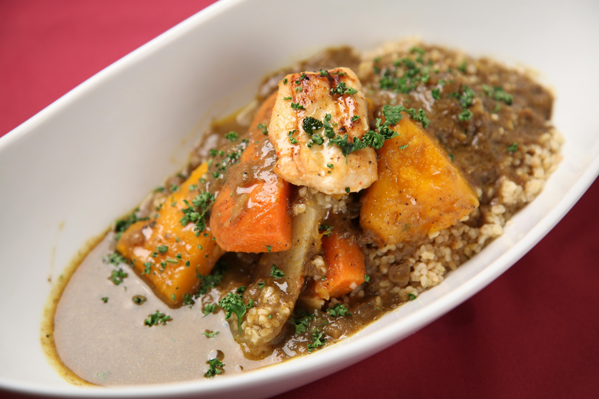

Irish stew is a traditional, hearty dish made with lamb or beef, potatoes, carrots, onions, and sometimes parsnips, all simmered together in a flavorful broth. The ingredients are simple, but the slow cooking process allows the flavors to meld together, creating a rich and comforting meal. Often seasoned with salt, pepper, and herbs like thyme, Irish stew is a staple of Irish cuisine, known for its warmth and satisfying qualities, especially in colder weather. It is a beloved dish that showcases the country's agricultural heritage, particularly its abundance of root vegetables and meat